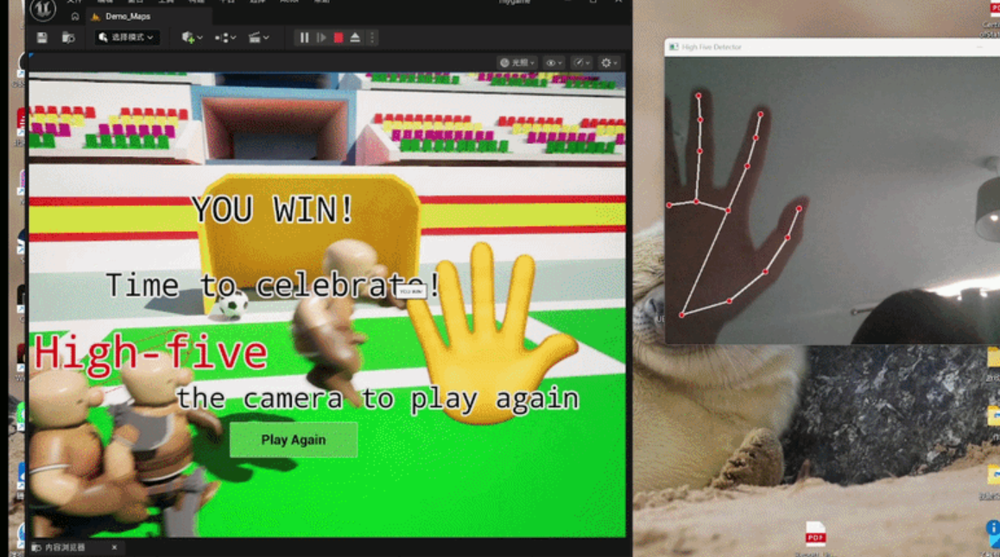
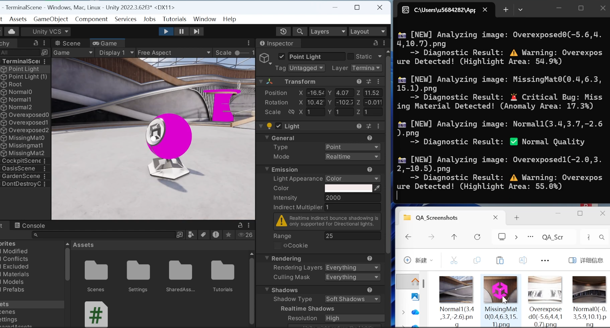
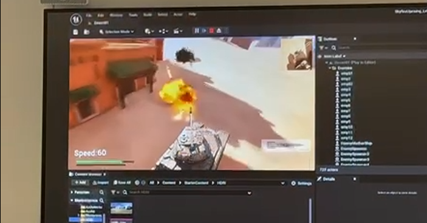

拥抱“认知放大”
我是AI时代的AI原生开发者。我不把工具视作简单的辅助，而是将其作为认知的“放大器”。借助 GPT 和 Cursor，我能在极短时间内跨越技术壁垒，构建出可运行的原型。对我而言，学习本身就是一项通过快速迭代和AI对齐来完成的工程任务。
Loading...
MSc 游戏工程 · 互动内容开发实习生
我如何思考与构建
我是AI时代的AI原生开发者。我不把工具视作简单的辅助，而是将其作为认知的“放大器”。借助 GPT 和 Cursor，我能在极短时间内跨越技术壁垒，构建出可运行的原型。对我而言，学习本身就是一项通过快速迭代和AI对齐来完成的工程任务。
我习惯用类似AI模型的思维来处理复杂生活——将决策过程拆解为影响因子与加权矩阵，再辅以客观的事实检索，通过算法辅助进行量化权衡。但这并不意味着冷冰冰的逻辑，这种方式反而让我跳出了直觉的偏见，能更理智地在复杂与不确定性中找到最优解。
我倾向于把复杂事物降维拆解为一个个可独立攻破的最小闭环。这种工程思维不仅限于写代码，更融入了我的生活。我不惧怕任何难啃的骨头，无论是复杂的系统交互，还是《艾尔登法环》与《只狼》中的高难度Boss战——我享受在失败中分析机制、优化策略，直到获得最终成就感的那个过程。
扎实的技术必须承载好的内容。我追求高审美，并认为审美不仅是视觉的装饰，更是对人内心状态的投射。我渴望创作能引发强烈情感共鸣的作品，因为在我看来，技术是构建世界的骨架，而审美则是赋予它灵魂的血肉。
理学硕士 (MSc) · Game Engineering（游戏工程）
理学学士 (BSc) · 地理信息科学 (GIS)

Action-Survival-Football · 独立开发 · UE5 + AI Vision
UE5 物理脉冲与球体追踪 · OpenCV/MediaPipe 击掌识别 · 低延迟跨平台通信闭环

Unity + CNN · 核心开发者 · 2026.02 – 至今
引擎内自动漫游截图生成训练集 · CNN 识别渲染异常（如材质丢失）

Team Leader · 敏捷研发 · 2025.11 – 2026.01
主导架构与研发排期 · Git 分支策略与 Code Review · 场景与多媒体资产整合调优